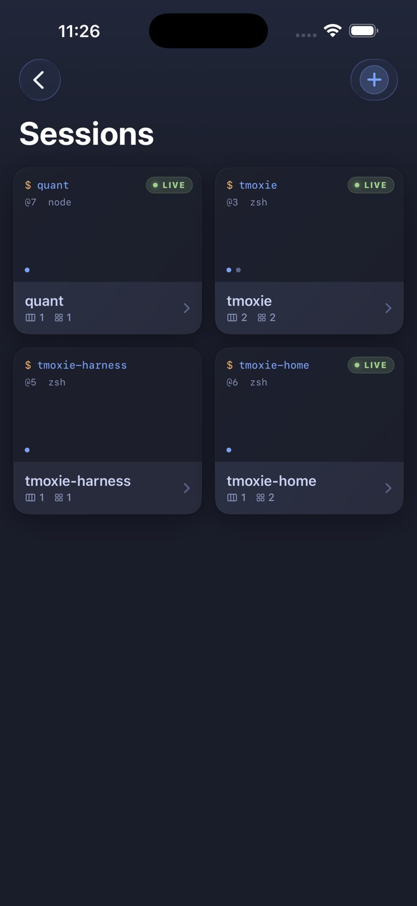

Requirements
- iPhone with iOS 17 or later.
- A reachable SSH server with password authentication.
- Local Network permission when the host is reached through a LAN or VPN.
- tmux on the remote host for session cards, windows, panes, reconnect routing, and Web Preview memory.
For a home or private host, Tailscale or another VPN is recommended. A host without tmux can use the plain SSH fallback. Public-key authentication and iPad-optimized layouts are not included in the current release.
Core concepts
Host
A remote machine reached over SSH. A saved host contains its label, network address, port, username, and a Keychain-protected password.
Session
A tmux workspace that continues running on the remote host after your phone disconnects. A session can contain several windows.
Window
A tab-like terminal group inside a session. Each window contains one or more panes. tmoxie presents windows as tabs and remembers the visible window for each session.
Pane
An individual terminal inside a window. A pane can run a shell, editor, server, log stream, or terminal AI agent.
tmoxie does not move your process into a cloud service. The process remains on your SSH host, inside tmux.
Hosts and SSH security
Saved SSH passwords use Apple Keychain with device-only, non-synchronizing protection. Host records and trusted fingerprints are stored locally by the app.
Host-key verification
The first connection asks you to trust the server fingerprint. Compare it with a trusted source. If the fingerprint changes later, stop and confirm that the host was rebuilt or its key was intentionally rotated before deleting the saved trust entry.
Private hosts with Tailscale
Tailscale can provide the private network route to a home computer without opening SSH to the public internet. Install it on the iPhone and remote computer, sign in to the same tailnet, then save the host's MagicDNS name or Tailscale IP address in tmoxie.
tmoxie still connects to the computer's normal OpenSSH server. Current releases require the OS username and an SSH password. tmoxie does not currently authenticate through Tailscale SSH. See the step-by-step Tailscale tutorial.
Connection failures
- Confirm hostname or IP address, port, username, and password.
- Confirm VPN, Tailscale, or local network access.
- Confirm
sshdis running and password login is allowed. - Try the same credentials with another SSH client to separate server and app issues.
Sessions, windows, and panes
The Sessions screen reads tmux state from the selected host. On a tmux-capable host, tmoxie can create or attach the default tmoxie-home session and also discovers your other existing sessions. Pull down to request a fresh list and new card snapshots.
Session actions
- Create a new named session from the add button.
- Rename a session from its actions menu.
- Kill a session only when you intend to destroy all of its windows and processes.
Window navigation
Tap a window tab to switch. Open the Jump to window sheet for a larger list. tmoxie remembers the last visible window by session and prefers that selection when you return.
Minimize and Full Screen
Minimize returns to session cards without closing the session. Full Screen is available from the more menu and hides app chrome while keeping a floating way back to the normal layout.

Terminal input and scrolling
Shell panes receive direct terminal input. Known agent panes also gain the optional local composer described below.
- Drag terminal content to scroll through available history.
- Use the shortcut bar for keys that are awkward on the iPhone keyboard.
- Hold and drag the directional control for repeated cursor or navigation input.
- Use the pane refresh action after reconnect if the visible TUI needs a fresh capture.
Full-screen terminal apps often use an alternate screen with their own redraw behavior. tmoxie preserves that distinction so shells keep scrollback while agent and editor TUIs can redraw their active view.
Agent composer
The composer is a local draft field for known terminal AI agents. Text does not reach the host until Send is activated.
- The keyboard’s Send key submits the draft.
- The circular up arrow sends the same complete draft.
- Hardware Return sends. Paste or dictate when a prompt needs multiple lines.
- Collapse hides the editor while keeping its draft available.
- Dictation updates the draft and stops rather than overwriting a manual edit.
Multi-line prompts use bracketed paste only when the active terminal requested that mode. The prompt body and submit key are written in order so an agent receives one complete turn.
Voice dictation
Dictation requires Microphone and Speech Recognition permissions and runs only when on-device recognition is available. Audio is not saved by tmoxie.
Shortcut bar and pads
Quick Bar is the one-tap row above the keyboard. Pads hold larger groups for tmux, common agents, universal terminal actions, and navigation keys.
Customize the bar
- Open Settings, scroll to Keyboard, then tap Customize bar.
- Switch between Quick Bar and Pads.
- Add built-ins from the searchable library or create a custom shortcut.
- Tap an editable shortcut to change it, or use Reorder to move shortcuts.
- Swipe to delete a shortcut. Add built-ins again from the library when needed.
Pads themselves are built-in groups. Their shortcuts can be added, edited, reordered, deleted, and pinned individually to Quick Bar. The keyboard-dismiss control stays pinned at the trailing edge.
Shortcut customization is part of Premium. Default keyboard controls remain available without editing the layout.
Photos, clipboard images, and files
The composer attachment menu offers Photo Library, Files, and Clipboard Image. If the clipboard has no image, tmoxie keeps the action available and shows a clear message after you tap it.
tmoxie uploads the selected item to ~/.tmoxie-uploads on the active SSH host and inserts the remote path into the draft. One selected image can be annotated before upload.
Remote cleanup
tmoxie does not automatically delete old remote uploads. Inspect and remove them when space matters:
du -sh ~/.tmoxie-uploads
find ~/.tmoxie-uploads -type f -mtime +7 -print
# Review the list, then:
find ~/.tmoxie-uploads -type f -mtime +7 -deleteWeb Preview
Web Preview opens a remote HTTP loopback service through the existing SSH connection. It does not expose the service publicly.
- Tap the globe from a tmux pane.
- Enter a bare port such as
3000or a loopback address and path. - Edit the address to change destinations, or use Reload for the current page.
- Return to another tmux window to use its separately remembered address.
The server must listen on the remote loopback interface. SSH port forwarding must be allowed. HTTPS preview is not supported in the current release.
Web Preview uses a non-persistent WebKit data store. A page can still request external resources under that page's own behavior and policies.
Agent Inbox and notifications
The Inbox collects supported terminal notifications such as an agent needing input or finishing a task. Items can route back to their host, session, window, and pane when that destination still exists.
Set up agent hooks
- Open Agent Inbox. From the empty state, choose the setup action.
- Copy the installation prompt.
- Paste it into the agent running on the selected host.
- Review the requested shell files and hook changes, then let the agent install them.
- Run the included verification notification.
tmoxie also recognizes common OSC notification sequences emitted by terminal tools. Inbox items remain available in the app. Local alerts and haptics require an active trial or Premium, and they work while tmoxie is active or only recently backgrounded. They are not always-on push notifications after iOS suspends SSH.
App appearance and terminal themes
App controls use the Graphite interface and can follow the iPhone or stay in Light or Dark mode. Terminal color profiles are separate and affect live terminal content and session previews.
Included terminal profiles are Tokyo Night, Catppuccin Mocha, Dracula, Gruvbox Dark, Nord, and Solarized Dark. Theme sources and licenses are available from Settings.
Data, diagnostics, and deletion
tmoxie has no app account, advertising, or third-party analytics. SSH traffic connects directly to the host you select.
- Passwords are stored in Apple Keychain.
- Hosts, settings, shortcuts, preview addresses, Inbox items, and diagnostics are local app data.
- Raw terminal byte recording is off by default and limited to the current launch when enabled.
- Logs and recordings are shared only through an explicit iOS share action.
The debug log grows until you clear it from Settings, Diagnostics. Delete a saved host before uninstalling tmoxie if you want the app to remove its stored password from Keychain. Delete remote uploads separately on the SSH host. See the complete Privacy Policy.
Current limits
- Password-based SSH only.
- iPhone interface; iPad optimization is planned separately.
- After the seven-day trial, adding a saved host or using Quick Connect requires Premium.
- HTTP Web Preview only.
- Background execution remains subject to iOS suspension rules.
- Remote hosts, tmux, terminal agents, and web services remain third-party or user-controlled software.
For problem-specific checks, read Support and troubleshooting.